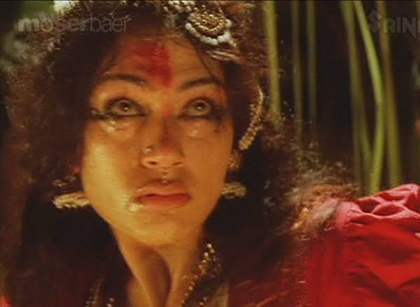

“ഞാള്ളാ, ദൂക്കുട്ടനാ!!!”
എന്തെങ്കിലും മനസ്സിലായോ?
ആദ്യം കേട്ടപ്പോ എനിക്കും ഒന്നും മനസ്സിലായില്ല.
സബ്ജക്ടിലേക്ക് വരാം…
കഴിഞ്ഞ ദിവസത്തെ നാരങ്ങാപ്പക മനസ്സിലിരിക്കെ ഇവൾക്കിട്ട് എന്തേലും ഒരു പണി കൊടുക്കണമല്ലോ എന്നു ചിന്തിച്ചിരിക്കുമ്പോളാണ് പെങ്ങള് കയ്യും കാലുമൊക്കെ കഴുകി (സന്ധ്യാനാമം ജപിക്കാൻ ആണെന്നൊന്നും തെറ്റിദ്ധരിച്ചേക്കരുത്) ഏതാണ്ട് മണ്ണ് അലർജി എന്നോണം തൊങ്കി തൊങ്കി അകത്തേക്ക് കയറാൻ ഒരുങ്ങിയതും, ഞാൻ നൈസായി മുറ്റത്തെ ചെളിവെള്ളത്തിലേക്ക് തള്ളിയിട്ടതും.
ശേഷം സ്വാഭാവികമായും കായികപരമായ ഒരു ഏറ്റുമുട്ടൽ (വാട്ടർ ഫൈറ്റ്) അവിടെ ഉണ്ടാവുകയും, ഞാനും അവളും അടുക്കളയും വീടും നല്ലപോലെ നനയുകയും ചെയ്തു.
ആ സമയത്ത് യുദ്ധഭൂമിയെ പൂർവ്വസ്ഥിതിയിലേക്ക് എത്തിക്കുക എന്നത് പ്രായോഗികമായ കാര്യം അല്ലാത്തതിനാലും, അച്ഛനും അമ്മയും വന്നാൽ പതിവുപോലെ അവൾ പഠിക്കാൻ കയറുകയും ഫയറിങ് മുഴുവൻ ഞാൻ ഒറ്റയ്ക്ക് എന്റെ വിരിമാറിൽ ഏറ്റുവാങ്ങേണ്ടിവരും എന്നതിനാലും നൈസായി സ്കൂട്ടാവുക എന്നതാണ് ബുദ്ധി എന്നു മനസ്സിലാക്കിയ ഞാൻ വീടുവിട്ടിറങ്ങി.
അവിടേം ഇവിടേം ഒക്കെ ചുറ്റിത്തിരിഞ്ഞ് കാര്യങ്ങൾ ഒക്കെ സോൾവ് ആവാനുള്ള ഏകദേശ സമയം കഴിഞ്ഞു എന്ന് ഊഹിച്ച് വടക്കുനോക്കിയന്ത്രത്തിലെ ശ്രീനിവാസനെപ്പോലെ മന്ദം മന്ദം അകത്തു കയറിയ ഞാൻ കാണുന്നത് മുഖത്ത് ആംഗ്രി സ്മൈലിയുമായി നിൽക്കുന്ന അമ്മയെയാണ്.
അമ്മ: ഇവിടെ മുഴുവൻ വെള്ളം കോരിയൊഴിച്ചതാരാ?
അവൾ: “ഞാള്ള, ദൂക്കുട്ട്നാ”
അമ്മ: ഈ തുണിയൊക്കെ ഇവിടെ വലിച്ചു വാരി ഇട്ടേക്കുന്നതാരാ?
അവൾ: “ഞാള്ള, ദൂക്കുട്ട്നാ”
ഞാനും അമ്മയും ‘ഇതെന്തു ഭാഷ’ എന്ന് അതിശയിച്ചുനിൽക്കെ അച്ഛന്റെ ചോദ്യം; “അപ്പൊ കുപ്പീന്ന് അരിഷ്ടം എടുത്തു കുടിച്ചതോ? അതാരാ???”
(ശ്ശെടാ… ഇതെപ്പോ? എന്ന് എന്റെ ആത്മഗതാഗതം)
വല്ലപ്പോഴും വാങ്ങാറുള്ള അച്ഛന്റെ ദശമൂല ജീരകാരിഷ്ടത്തിന്റെ സാമ്പിൾ ബോട്ടിലിൽ നിന്നും ആദ്യത്തെ ഒരു സിപ്പ് പെങ്ങൾക്ക് ഒഫീഷ്യലി അനുവദിച്ചിട്ടുള്ള കാര്യമായിരുന്നു.
എന്നാൽ ഈയിടെയായി ക്വോട്ട കഴിഞ്ഞും അളവിലുള്ള ക്രമാതീതമായ കുറവ് ശ്രദ്ധയിൽവപ്പെട്ടപ്പോളാണ് ‘കള്ളി കപ്പലിൽ തന്നെ’ എന്നത് പരസ്യമായ ഒരു രഹസ്യമായി നിലനിൽക്കെ, അച്ഛൻ സാമ്പിൾ ബോട്ടിൽ ഒഴിവാക്കി വലിയ കുപ്പി വാങ്ങാനും ആരും കാണാതെ അത് കട്ടിലിന്റെ അടിയിൽ ഒളിപ്പിക്കാനും നിർബന്ധിതനായത്.
ആ കുപ്പിയിൽ നിന്ന് വലിയൊരു ഭാഗം അരിഷ്ടം അപ്രത്യക്ഷമായിരിക്കുന്നു!!!
വീട്ടിൽ ആരും ഇല്ലാത്ത തക്കം നോക്കി അരിഷ്ടം എടുത്തു വായിലേക്ക് കമഴ്ത്തി കുടലു കത്തിച്ച് തലയ്ക്കു പിടിച്ചു കിക്കായി കിറുങ്ങി നിൽക്കയാണ് കക്ഷി…
അമ്മ: അച്ഛൻ ചോദിച്ചത് കേട്ടില്ലേ? അരിഷ്ടം എടുത്തു കുടിച്ചത് ആരാന്ന്?
ലെ പെങ്ങൾ: “ഞാള്ള, ദൂക്കുട്ട്നാ”
(ഞാനല്ല, ദീപക് ചേട്ടനാ എന്ന്)
ശേഷം മുഖങ്ങളിൽ ഫിറ്റു ചെയ്തുവെച്ച ആംഗ്രി സ്മൈലികൾ ഓരോന്നായി ചിരിക്കുന്ന പരുവത്തിലേക്ക് പരിവർത്തനം ചെയ്യപ്പെടുകയും, കെട്ടിറങ്ങാൻ ഞാൻ തന്നെ മുൻകൈയെടുത്ത് ഒരു ഗ്ലാസ് നാരങ്ങാവെള്ളം ഉപ്പിട്ടു കലക്കി കൊടുക്കുകയും ചെയ്തു.
PS: അരിഷ്ടത്തിൽ മദ്യം ചേർത്തിട്ടുണ്ടായിരുന്നോ എന്ന രീതിയിലുള്ള കമന്റുകൾ കർശനമായും നിരോധിച്ചിരിക്കുന്നു. ടെസ്റ്റ് (ടേസ്റ്റ്) ചെയ്തു നോക്കി ഇല്ല എന്നുറപ്പിച്ചതിനു ശേഷം ഇടുന്ന പോസ്റ്റാണ്.
(താഴെയുള്ളത് നാരങ്ങാവെള്ളം കൊടുക്കുന്നതിനിടെ അവളറിയാതെ എടുത്ത #UnexpectedClick)

-DeOn-